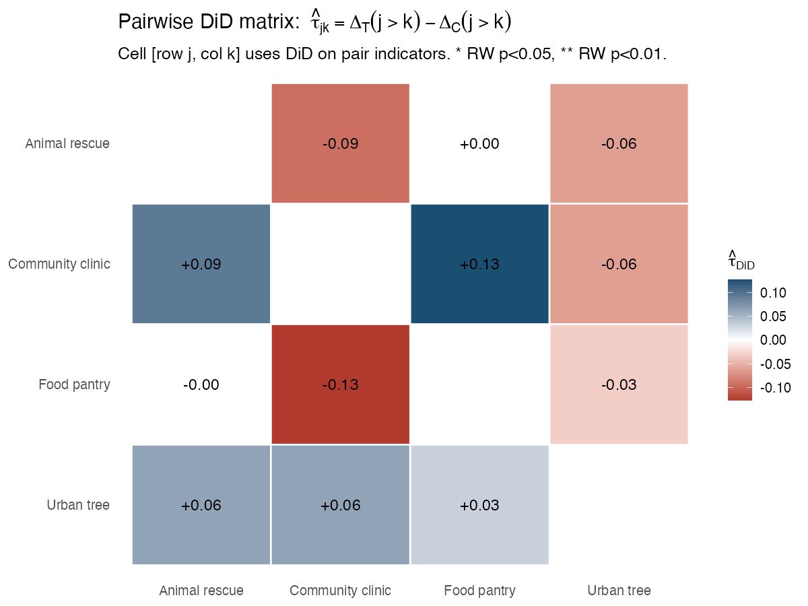
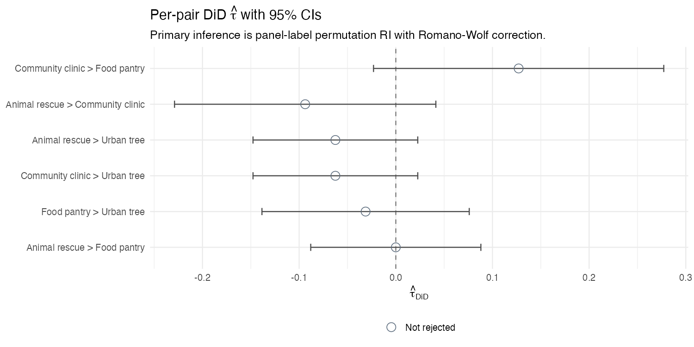
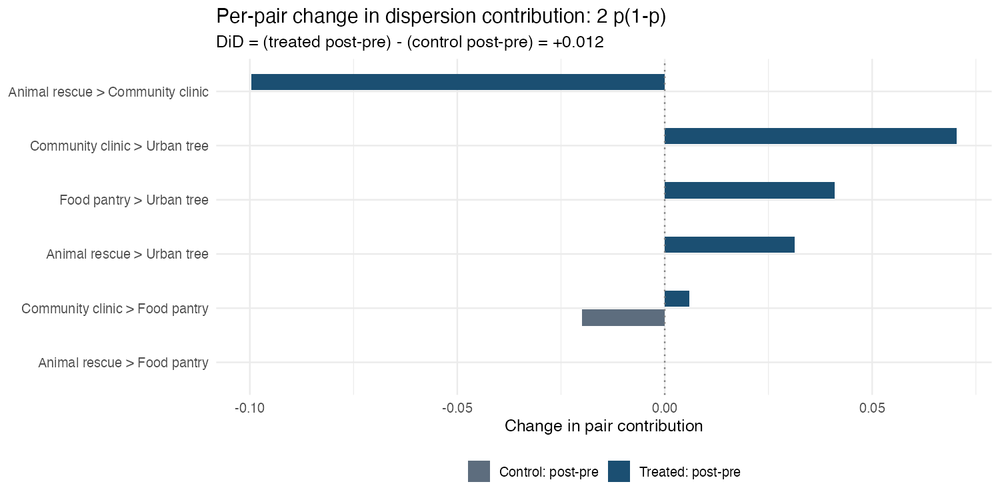
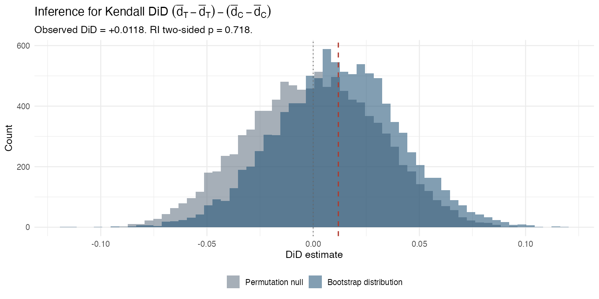
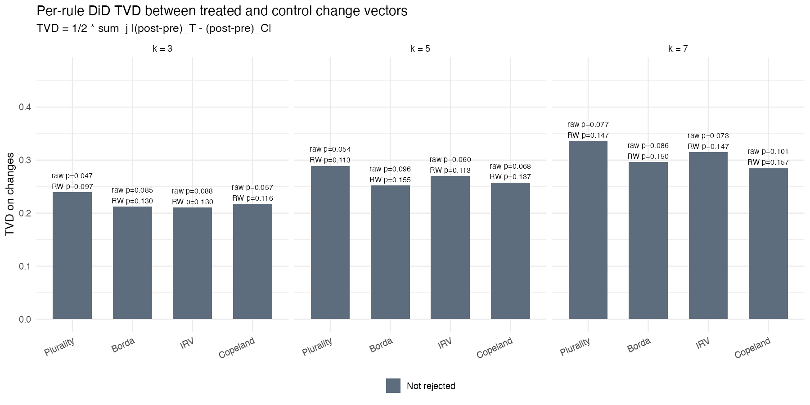
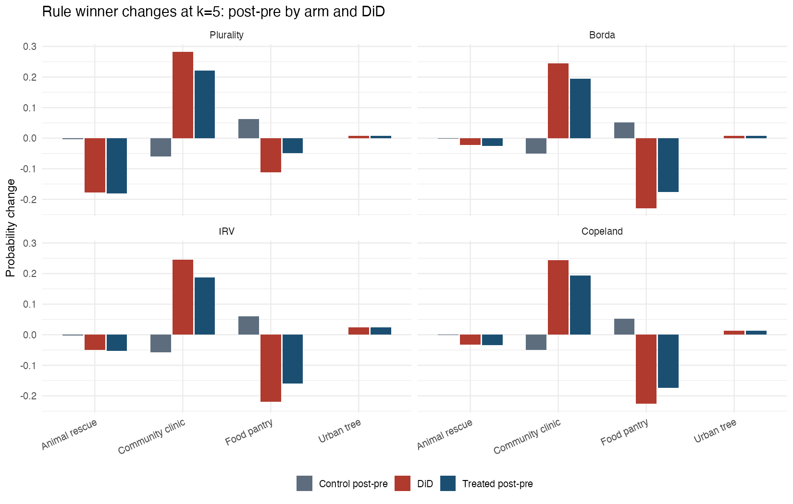
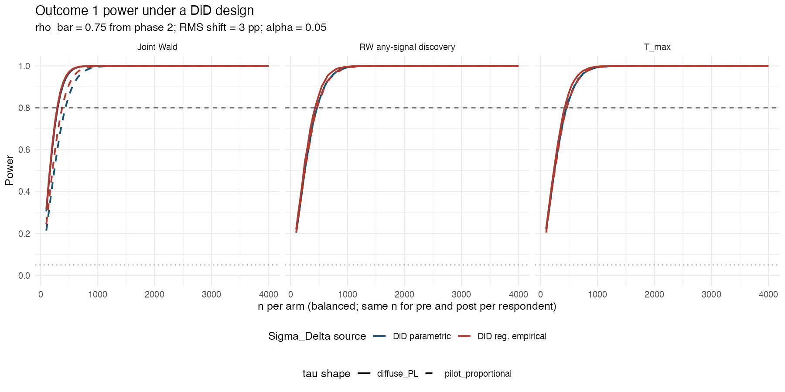
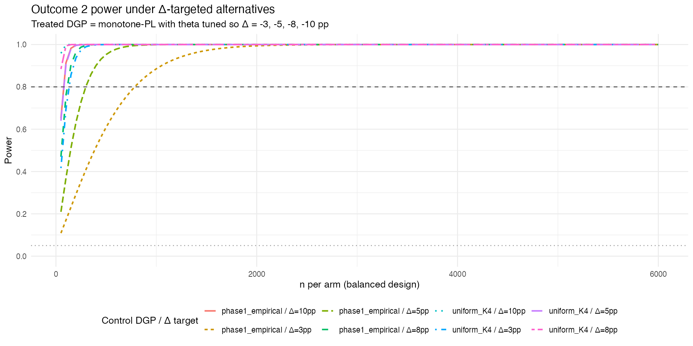

About this study
How AI-facilitated exposure to others' reasoning changed collective decision-making
Many deliberative tools are emerging around online democratic participation, collective intelligence, and AI-mediated decision-making. This study focuses on an empirical question inside this broader moment: when a collective decision-making tool helps people encounter one another's reasoning, do preferences and collective outcomes actually move? Does this move represent a meaningful shift in how people think about and prioritize their collective goals? Does it reflect on the voting and vote aggregation?
Why this question
AI-mediated deliberation is often motivated by the hope that large groups can make better decisions when ideas are surfaced, summarized, and reflected back without the usual meeting-room bottlenecks. But those claims need empirical grounding. We aim to expand current empirical knowledge by testing an instance of online deliberation with Harmonica, an AI-mediated deliberation tool, around a realistic participatory budgeting task.
About this study
Participants were split into a control and a treatment group. Both were asked to rank four possible recipients of a real donation: a food pantry, a health clinic, an urban tree initiative, and an animal rescue shelter. In the no-cross-pollination control group, participants made and revised their choices independently. In the exposure group, participants first submitted an initial ranking, then reviewed short anonymized summaries of how other participants were reasoning about the same trade-offs, and finally submitted a final ranking.
This dashboard shows what changed after that exposure: which options gained or lost support, whether participants reordered their rankings, whether interpersonal ranking dispersion changed, and whether simulated small-group voting outcomes changed under common ranked-ballot rules.
How to read the pilot: the goal of this pilot is not to declare a final causal effect. The goal is to learn whether the design produces measurable movement and what sample sizes a stronger follow-up would need.
What participants did
The task was to choose which charity should receive the donation
Participants had a private conversation with a neutral AI facilitator. They ranked all four charities and briefly explained why they preferred their top choice. In the treatment condition, participants first gave an initial ranking, reviewed anonymized summaries of other participants' reasoning, and then submitted a final ranking.
Baseline
Rank privately
Participants submit a complete ordered list of the four charities.
Reasoning
Explain the choice
The AI-facilitator asks for a short rationale behind the ranking.
Only in the exposure arm
Read peer reasoning
Participants review anonymized rephrasings of other participants' reasons.
Final
Rank again
AI-facilitator asks for the final ranking and rationale.

What happens behind the scenes.
Summary
After manual correction of two Phase 1 extraction rows, the reports still show directional movement: pairwise preferences shift by 7.50 pp RMS, rule-output winner distributions move toward Community Health Clinic and away from Community Food Pantry, and no omnibus or RW-adjusted outcome clears conventional thresholds.
Complete control and exposure-arm rankings used in the DiD reports.
18.8% changed their first-place charity after seeing peer reasoning.
RMS pairwise DiD shift across the six option pairs.
Approximate participants per arm for paired DiD or k=5 rule-output targets.
No k = 3, 5, or 7 omnibus RI test rejects after correction.
Plain-language read
The pairwise preference matrix still moves, especially Community Health Clinic versus Community Food Pantry, but the corrected RI diagnostics are comfortably above 0.05. We do not see evidence that treatment made participants' rankings much more or less mutually similar overall. Ranked-ballot group outcomes also move under plurality, IRV, Borda, and Copeland simulations, but the corrected randomization-inference tests are not conventionally significant.
Important: this is pilot-grade evidence. The current reports use a difference-in-differences framing, comparing before-to-after movement in the exposure arm against before-to-after movement in a no-cross-pollination comparison arm. Treat the results as evidence for design and sample-size planning, not as a final causal claim.
Analysis plan
Three outcomes tell three different parts of the story
The analysis plan separates preference movement, interpersonal convergence of views, and collective-choice (voting) consequences.
| Outcome | Question it answers | Primary readout | Inference |
|---|---|---|---|
| Pairwise preference matrix | Which option-vs-option preferences moved, and by how much? | Six pairwise DiD estimates plus RMS shift (compact magnitude summary across all charity-pair comparisons). | Randomization inference and Romano-Wolf correction for multiple comparisons. |
| Kendall dispersion | Did rankings become more or less similar across people? Convergence? | DiD in interpersonal ranking dispersion. | Randomization inference by shuffling arm labels on respondent pre/post tuples, with bootstrap companion. |
| Social choice panel | Do preference changes alter what small committee-groups would select? | Winner distribution changed under popular voting rules: plurality, Borda, IRV, and Copeland. Condorcet winner existence as a diagnostic. | Randomization inference over individual assignment labels (treatment/control labels across individuals). |
Deep dive: pilot metrics and results
Pairwise preferences moved by 7.50 percentage points RMS. The largest observed pair is Community Health Clinic over Food Pantry at +12.7 pp, but no individual pair rejects after Romano-Wolf correction.
Kendall dispersion changed by only +1.18 pp with RI p = 0.718. The pilot does not show a detectable change in overall ranking coherence.
Rule-output DiD remains directionally meaningful, but the corrected omnibus tests do not reject for k = 3, 5, or 7. At k = 5, rule TVDs range from 0.252 to 0.289; no rule clears RW correction.
Surface-level movement inside the control group
The no-cross-pollination control group shows some before-to-after drift. Community Health Clinic lost first-place support while Food Pantry gained support, which is why the DiD reports compare exposure-arm movement against this baseline rather than treating any pre/post change as treatment-driven.
| Charity | Initial top votes | Final top votes | Net change |
|---|---|---|---|
| Community Animal Rescue Shelter | 7 | 7 | 0 |
| Community Food Pantry Network | 12 | 13 | +1 |
| Urban Tree Initiative | 1 | 1 | 0 |
| Community Health Clinic | 10 | 9 | -1 |
Surface-level movement inside the treatment group
Only a minority changed their first-place charity, but Community Health Clinic gained first-place support while Animal Rescue lost it. The rule-output results below amplify this because ranked ballots affect group outcomes through every position, not only the top choice.
| Charity | Initial top votes | Final top votes | Net change |
|---|---|---|---|
| Community Animal Rescue Shelter | 7 | 4 | -3 |
| Community Food Pantry Network | 10 | 9 | -1 |
| Urban Tree Initiative | 3 | 4 | +1 |
| Community Health Clinic | 12 | 15 | +3 |
Outcome 1: pairwise preferences moved, but pair-level discoveries remain tentative
The pairwise analysis compares how the probability of ranking one charity above another changes in the exposure arm versus the comparison arm. The overall RMS movement is meaningful for a pilot, but the report is deliberately cautious: Wald rejects jointly, while RI-based joint diagnostics are comfortably above 0.05.
| Headline quantity | Value | Interpretation |
|---|---|---|
| RMS pairwise DiD shift | 7.50 pp | Average magnitude of directional movement across six unordered option pairs. |
| Joint Wald p-value | 0.0434 | Rank-aware diagnostic rejects at alpha = 0.05. |
| Permutation T_max p-value | 0.3890 | RI joint max statistic does not reject at alpha = 0.05. |
| Permutation T_ss p-value | 0.1951 | RI sum-of-squares statistic is suggestive, not conventionally significant. |
| Per-pair DiD estimate | DiD | RW p |
|---|---|---|
| Community Health Clinic > Food Pantry | +12.7 pp | 0.389 |
| Animal Rescue > Community Health Clinic | -9.4 pp | 0.757 |
| Animal Rescue > Urban Tree | -6.3 pp | 0.757 |
| Community Health Clinic > Urban Tree | -6.3 pp | 0.757 |
| Food Pantry > Urban Tree | -3.1 pp | 0.824 |
| Animal Rescue > Food Pantry | 0.0 pp | 1.000 |

Pairwise DiD heatmap from the report output.

Per-pair estimates and descriptive intervals.
Outcome 2: no detectable change in ranking coherence
Kendall dispersion asks whether two randomly drawn participants in the same arm disagree on more or fewer option pairs after the intervention. The current pilot estimate is close to zero and statistically uninformative.
| Quantity | Value | Read |
|---|---|---|
| Control change | -0.34 pp | Comparison-arm dispersion was essentially stable. |
| Exposure change | +0.84 pp | Exposure-arm dispersion rose slightly. |
| DiD | +1.18 pp | No meaningful evidence of treatment-attributable spread or convergence. |
| RI p-value | 0.718 | Null-compatible. |
| Bootstrap 95% CI | [-4.64, +6.89] pp | Wide enough that the pilot mainly rules out nothing precise. |
| Largest dispersion contribution shifts | Contribution DiD |
|---|---|
| Animal Rescue > Community Health Clinic | -9.96 pp |
| Community Health Clinic > Urban Tree | +7.03 pp |
| Food Pantry > Urban Tree | +4.10 pp |
| Animal Rescue > Urban Tree | +3.12 pp |
| Community Health Clinic > Food Pantry | +2.59 pp |
| Animal Rescue > Food Pantry | 0.00 pp |

Dispersion decomposition by option pair.

Uncertainty around the dispersion DiD statistic.
Outcome 3: synthetic-group decisions shift directionally toward Community Health Clinic
The rule-output panel simulates small groups inside each arm and asks how often each voting rule picks each charity. At the primary group size k = 5, the largest movement is an increased probability that Community Health Clinic wins and a decreased probability that Food Pantry wins, but no k = 5 statistic rejects after RW correction in the manually corrected run.
| Group size | T_max obs | Omnibus p | Read |
|---|---|---|---|
| k = 3 | 3.750 | 0.097 | Directionally large but not significant after RI. |
| k = 5 | 3.634 | 0.113 | Primary group-size readout; no RW rejection. |
| k = 7 | 3.353 | 0.147 | Same directional pattern, weaker RI evidence. |
| k = 5 statistic | TVD DiD | RW p | N/arm for 80% power |
|---|---|---|---|
| Plurality winner distribution | 0.289 | 0.113 | 400 |
| Borda winner distribution | 0.252 | 0.155 | 410 |
| IRV winner distribution | 0.270 | 0.113 | 370 |
| Copeland winner distribution | 0.258 | 0.137 | 350 |
| Condorcet existence | 0.018 | 0.378 | Skipped |
| Largest k = 5 winner DiD cells | Winner change |
|---|---|
| Plurality, Community Health Clinic | +28.23 pp |
| IRV, Community Health Clinic | +24.58 pp |
| Copeland, Community Health Clinic | +24.42 pp |
| Borda, Community Health Clinic | +24.40 pp |
| Borda, Food Pantry | -22.90 pp |
| Copeland, Food Pantry | -22.50 pp |
Why this matters: the pairwise results say the preference structure moves; the rule-output panel says those shifts are visible in what common voting rules would pick in small synthetic groups. Condorcet existence itself barely changes, so the story is winner identity, not whether cycles appear.

TVD DiD by voting rule and synthetic group size.

Winner distributions before and after, by arm and rule.
Power calculation outputs
What sample sizes are worth planning around?
The power outputs are assumption-dependent, but they are useful for sizing a follow-up. The most relevant numbers are the paired DiD pairwise matrix and the k = 5 rule-output panel, because those match the analysis reports most closely.
| Target | 80% power estimate | Dashboard read |
|---|---|---|
| Pairwise matrix, paired DiD, RMS = 3 pp, RW-any discovery | 450-500 per arm | Main planning number for the primary preference-structure outcome. |
| Pairwise matrix, cross-sectional-style empirical calibration | 900-950 per arm | Useful if the final design cannot use the paired pre/post structure. |
| Kendall dispersion, direct target Δ = -5 pp | 300 per arm | Detectable if the treatment changes coherence directly at a moderate scale. |
| Kendall dispersion, direct target Δ = -3 pp | 800 per arm | Small coherence shifts need a much larger study. |
| Rule-output panel, k = 5, target TVD = 0.10 | 350-410 per arm | Slightly below the paired pairwise target in this run; Borda is the most expensive k = 5 rule. |
| Condorcet existence power | Not estimated | Skipped in the report because observed changes are small and ceiling-limited. |

Pairwise DiD power curves for RMS = 3 percentage point alternatives.

Direct-delta dispersion power curves.
Read this first
What not to overclaim
| Caveat | Why it matters |
|---|---|
| Pilot uncertainty | The analysis is useful for design learning and prioritization, but all estimates remain sensitive to sample composition and the specific charity set. |
| Control trend is measured | The reports use pre/post movement in the comparison arm rather than assuming zero baseline movement. That is good statistically, but it means the exact design must be explained whenever results are shared. |
| Pairwise marginals are not the full ranking distribution | The pairwise matrix shows directional movement, while the rule-output panel is needed for downstream winner consequences. |
| Synthetic groups are a simulation device | Generating many synthetic groups does not create many independent observations. Inference remains at the participant/randomization level. |
| Power numbers depend on target effects | The estimates are only as portable as the assumed RMS, dispersion, and TVD targets. Use them as planning anchors, not fixed truths. |